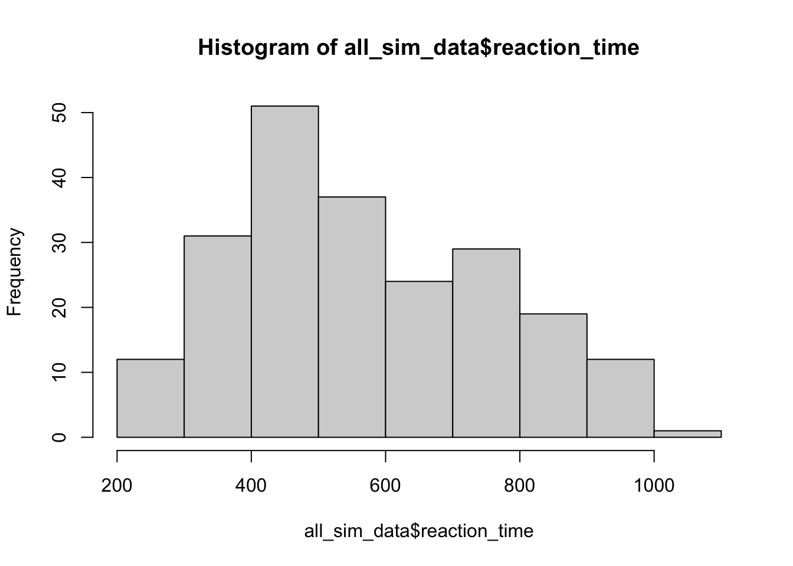

Simulating Stroop effects with ChatGPT
LLMs
Stroop
ChatGPT
This is a short post to determine how easy it would be to simulate performance in a classic human attention task using ChatGPT. The short answer is that it can generate data in the style of a Stroop experiment without too much effort on my part.
Update: I’m continuing to work on this project in more depth over here https://crumplab.com/GPTAttentionPerformance/
I had a couple of hours to spare this afternoon, so I tried to simulate performance in a Stroop task using ChatGPT and the openai API. This post will be brief, and I’m mainly using the time to see if I can get the api to work. Let’s go.
In a Stroop task (for a review see, MacLeod 1991) participants are asked to respond quickly and accurately to identify stimuli with target and distractor dimensions. In the examples below, each stimulus is a word printed in a color. The target dimension is the ink-color, and the distractor dimension is the word name. The task is to identify the ink-color as quickly and accurately as possible.
There are congruent and incongruent item types. Congruent items have matching color and word dimensions (the word BLUE written in blue ink). Incongruent items have mismatching color and word dimensions (the word BLUE written in red ink). The Stroop effect is the finding that responses are usually faster and more accurate for congruent than incongruent items.
Who cares if ChatGPT can simulate the Stroop effect?
I’m not sure. ChatGPT is a large language model, and although I have some familiarity with how I think it works, I don’t know most of the important details…especially compared to the level of detail I’m used to from computational models in cognitive psychology. For this reason, I’m not interested in modeling Stroop performance with ChatGPT for any explanatory purpose.
Based on messing around with GPT models previously, I’m pretty confident that some series of prompts will produce data in the style of a Stroop experiment.
Why do I care about this? Some of my research involves questions about attentional control abilities (Bugg and Crump 2012; Braem et al. 2019), and some of my work uses online methods to collect data. For example, experimental tasks are programmed for web-browsers using tools like JsPsych (De Leeuw 2015), and participants may be recruited from platforms like Amazon’s Mechanical Turk (Crump, McDonnell, and Gureckis 2013). Online methods are useful research tools, but they are not without problems.
One of my concerns as a cognitive psychologist interested in human behavior is that participants are actual people completing tasks to the best of their understanding. I’m usually not interested in analyzing data spoofed by a bot.
I haven’t encountered major issues with bots in the tasks I run. These tasks require quick responses to recognize words and letters. Although it is possible to develop a bot to perform these actions, it wouldn’t be profitable for the bot programmer.
In the last few months I’ve run a tasks on Amazon Mechanical Turk and opened them up to a general audience with almost no restrictions. This produced very low quality data and reminded me of several topics discussed in Todd Gureckis’ mturk blog post from a couple years ago. In the section on a nightmare world of human-bot hybrids Todd mentioned commonly available browser plugins that record a person’s interactions with a website and then replay them back. In an online psych study, this could involve completing the task one time (with all of the responses being recorded by the plugin), and then reloading the study under a different user name and completing it again using the previously recorded responses. It seemed to me that some mturk workers were doing this (or similar).
During task debriefing sessions, I use various questions to inquire about participants’ experiences. However, I have recently observed that the responses from some mturk workers resemble those generated by ChatGPT. Notably, I found fewer issues like this when using more restrictive qualifications, such as master worker, over 95% HIT completion rate, and over 200 HITS completed.
In the most recent cases where I suspected the data was compromised it was also really easy to tell. For example, accuracy was at chance or, reaction times were way too fast. The strategy of using a browser plugin to record and then replay previous responses doesn’t produce above chance performance when the task randomizes the stimuli when ever the web-page is reloaded.
In any case, my question this afternoon was to do a bit of detective work to determine how easy it would be to spoof some Stroop data using ChatGPT. I’m not going to write a browser plugin to automate a GPT-bot capable of spoofing data in the context of browser-based task (say written using JsPsych, or Lab.js, or similar). But, I’m going to test a few prompts and see what kind of fake accuracy and reaction time data will be produced.
How I’m doing this
I’m running out of time, so the short version is:
- Get an openai.com account
- Install the openai R library https://github.com/irudnyts/openai
- Get an api key, and do the appropriate stuff
- Follow along with the minimally commented code below
Load the libraries
library(openai)
library(tidyverse)Test One Simulated Subject
I’ll use the gpt-3.5-turbo model. I’m creating a list of 24 Stroop trials, with 12 congruent and 12 incongruent items. The list is then randomized.
I’m using the chat completion api, with the system prompt:
You are a simulated participant in a human cognition experiment. Your task is to respond as quickly and accurately as possible, and record your simulated responses in a JSON file
Then, to request fake data for a Stroop experiment I write something like:
Consider the following trials of a Stroop task where you are supposed to identify the ink-color of the word as quickly and accurately as possible.
-----
1 The word yellow printed in the color green
2 The word red printed in the color yellow
3 The word blue printed in the color blue
4 The word green printed in the color yellow
5 The word blue printed in the color blue
6 The word blue printed in the color green
7 The word green printed in the color green
and so on for 24 trials (note the code specifies all 24 trials in the prompt)
-----
Put simulated identification responses and reaction times into a JSON with keys ‘trial’, ‘word’, ‘color’, ‘response’, ‘reaction_time’:
Here’s the code:
# use the colors red, green, blue, and yellow
# four possible congruent items
congruent_items <- c("The word red printed in the color red",
"The word blue printed in the color blue",
"The word yellow printed in the color yellow",
"The word green printed in the color green")
# four possible incongruent items
incongruent_items <- c("The word red printed in the color blue",
"The word red printed in the color green",
"The word red printed in the color yellow",
"The word blue printed in the color red",
"The word blue printed in the color green",
"The word blue printed in the color yellow",
"The word yellow printed in the color red",
"The word yellow printed in the color blue",
"The word yellow printed in the color green",
"The word green printed in the color red",
"The word green printed in the color blue",
"The word green printed in the color yellow")
# generate 50% congruent and 50% incongruent trials
# 12 each (congruent and incongruent)
trials <- sample(c(rep(congruent_items,3),incongruent_items))
# submit a query to open ai using the following prompt
# note: responses in JSON format are requested
gpt_response <- create_chat_completion(
model = "gpt-3.5-turbo",
messages = list(
list(
"role" = "system",
"content" = "You are a simulated participant in a human cognition experiment. Your task is to respond as quickly and accurately as possible, and record your simulated responses in a JSON file"),
list("role" = "user",
"content" = paste("Consider the following trials of a Stroop task where you are supposed to identify the ink-color of the word as quickly and accurately as possible.","-----", paste(1:24, trials, collapse="\n") , "-----","Put simulated identification responses and reaction times into a JSON with keys 'trial', 'word', 'color', 'response', 'reaction_time':", sep="\n")
)
)
)
# model responses are in JSON format
sim_data <- jsonlite::fromJSON(gpt_response$choices$message.content)
save.image("batch1.RData")Results
It is convenient that telling ChatGPT to return data in a JSON format actually works. Converting to a tibble, we can print out the trial-by-trial response from the model.
The “raw” data
Here is the JSON returned by ChatGPT. It has filled out the response column for each trial, and it has provided a reaction time value for each trial.
To be more accurate, it has returned this whole JSON file and written all of the columns. I still need to check whether the trial-to-trial data in this output file is the same as the order in the prompt.
These numbers look plausible-ish…although they all end in 0, which isn’t very plausible.
load(file = "batch1.RData")
knitr::kable(sim_data)| trial | word | color | response | reaction_time |
|---|---|---|---|---|
| 1 | yellow | green | green | 650 |
| 2 | red | yellow | yellow | 480 |
| 3 | blue | blue | blue | 390 |
| 4 | green | yellow | yellow | 560 |
| 5 | blue | blue | blue | 400 |
| 6 | blue | green | green | 720 |
| 7 | green | green | green | 420 |
| 8 | yellow | yellow | yellow | 380 |
| 9 | blue | blue | blue | 400 |
| 10 | green | blue | blue | 540 |
| 11 | red | red | red | 390 |
| 12 | blue | red | red | 610 |
| 13 | yellow | red | red | 540 |
| 14 | red | red | red | 420 |
| 15 | red | green | green | 670 |
| 16 | green | green | green | 430 |
| 17 | red | blue | blue | 550 |
| 18 | green | green | green | 370 |
| 19 | red | red | red | 420 |
| 20 | yellow | blue | blue | 540 |
| 21 | yellow | yellow | yellow | 390 |
| 22 | yellow | yellow | yellow | 370 |
| 23 | green | red | red | 660 |
| 24 | blue | yellow | yellow | 570 |
Mean Reaction times
And, now the moment I’ve been waiting for…Is there a Stroop effect? To answer this question I computed the mean reaction time for congruent and incongruent items. The answer is that YES, ChatGPT produces reaction time data in the style of Stroop experiment that does result in faster mean reaction times for congruent than incongruent items.
# report rt data
rt_data <- sim_data %>%
mutate(congruency = case_when(word == color ~ "congruent",
word != color ~ "incongruent")) %>%
group_by(congruency) %>%
summarize(mean_rt = mean(reaction_time), .groups = "drop")
knitr::kable(rt_data)| congruency | mean_rt |
|---|---|
| congruent | 398.3333 |
| incongruent | 590.8333 |
Accuracy Data
This time, ChatGPT didn’t make any mistakes.
# report accuracy data
accuracy_data <- sim_data %>%
mutate(congruency = case_when(word == color ~ "congruent",
word != color ~ "incongruent")) %>%
mutate(accuracy = case_when(response == color ~ TRUE,
response != color ~ FALSE)) %>%
group_by(congruency) %>%
summarize(accuracy = sum(accuracy)/12, .groups = "drop")
knitr::kable(accuracy_data)| congruency | accuracy |
|---|---|
| congruent | 1 |
| incongruent | 1 |
Next Steps
I’ve run out of time to work more on this right now, but I will add more to this post another day.
A next step will be to simulate data for many different ChatGPT participants. I’m curious if the spoofed RT distributions will have human-like qualities (e.g., ex-guassian). I’m also interested in whether slight variations to the instructions (e.g., complete this task with about 75% accuracy, or complete this task as if you were tired) systematically influence the results.
So far my main conclusion is that it wouldn’t be that hard to hack my studies using this kind of approach. Sigh.
Multiple simulated subjects
I tried to run the following, which loops the above 10 times. I ran into an error on the third iteration because the JSON was not formatted correctly. Added some validation for the JSON. The JSON was not consistent, so I changed the prompt up a bit.
So far I haven’t been able to run this loop. I got through 7 iterations, and then received a message that the server was overloaded. Also, only 2 of those 7 iterations produced valid JSON. I’m going to put this on the back burner for now.
Update: I’ve gotten more reliable JSON now with a prompt using double quotes rather than single quotes.
# use the colors red, green, blue, and yellow
# four possible congruent items
congruent_items <- c("The word red printed in the color red",
"The word blue printed in the color blue",
"The word yellow printed in the color yellow",
"The word green printed in the color green")
# four possible incongruent items
incongruent_items <- c("The word red printed in the color blue",
"The word red printed in the color green",
"The word red printed in the color yellow",
"The word blue printed in the color red",
"The word blue printed in the color green",
"The word blue printed in the color yellow",
"The word yellow printed in the color red",
"The word yellow printed in the color blue",
"The word yellow printed in the color green",
"The word green printed in the color red",
"The word green printed in the color blue",
"The word green printed in the color yellow")
# generate 50% congruent and 50% incongruent trials
# 12 each (congruent and incongruent)
trials <- sample(c(rep(congruent_items,3),incongruent_items))
#set up variables to store data
all_sim_data <- tibble()
gpt_response_list <- list()
# request multiple subjects
# submit a query to open ai using the following prompt
# note: responses in JSON format are requested
for(i in 1:10){
print(i)
gpt_response <- create_chat_completion(
model = "gpt-3.5-turbo",
messages = list(
list(
"role" = "system",
"content" = "You are a simulated participant in a human cognition experiment. Your task is to respond as quickly and accurately as possible, and record your simulated responses in a JSON file"),
list("role" = "user",
"content" = paste("Consider the following trials of a Stroop task where you are supposed to identify the ink-color of the word as quickly and accurately as possible.","-----", paste(1:24, trials, collapse="\n") , "-----",'This is a simulated Stroop task. You will be shown a Stroop item in the form of a sentence. The sentence will describe a word presented in a particular ink-color. Your task is to identify the ink-color of the word as quickly and accurately as possible. Put the simulated identification response and reaction time into a JSON array using this format: [{"trial": "trial number, integer", "word": "the name of the word, string","color": "the color of the word, string","response": "the simulated identification response, string","reaction_time": "the simulated reaction time, milliseconds an integer"}].', sep="\n")
)
)
)
# save the output from openai
gpt_response_list[[i]] <- gpt_response
# validate the JSON
test_JSON <- jsonlite::validate(gpt_response$choices$message.content)
print(test_JSON)
# validation checks pass, write the simulated data to all_sim_data
if(test_JSON == TRUE){
sim_data <- jsonlite::fromJSON(gpt_response$choices$message.content)
if(sum(names(sim_data) == c("trial","word","color","response","reaction_time")) == 5) {
sim_data <- sim_data %>%
mutate(sim_subject = i)
all_sim_data <- rbind(all_sim_data,sim_data)
}
}
}
# model responses are in JSON format
save.image("batch2.RData")load(file = "batch2.RData")Analysis
9 out 10 simulations returned a valid JSON file.
Ex-guassian RTs?
One reason to run multiple simulated subjects is to see whether the model gives different responses each time. This is a histogram of the simulated RTs across all simulated subjects. Reaction time distributions usually look a combination of a gaussian and an exponential distribution. This has some of that flavor.
hist(all_sim_data$reaction_time)
Do differenet simulated subjects show different Stroop effects?
The answer appears to be yes. All of these simulated subjects have different sized Stroop effects.
# report rt data
rt_data_subject <- all_sim_data %>%
mutate(congruency = case_when(word == color ~ "congruent",
word != color ~ "incongruent")) %>%
mutate(accuracy = case_when(response == color ~ TRUE,
response != color ~ FALSE)) %>%
filter(accuracy == TRUE) %>%
group_by(congruency,sim_subject) %>%
summarize(mean_rt = mean(reaction_time), .groups = "drop") %>%
ungroup() %>%
pivot_wider(names_from = congruency,
values_from = mean_rt) %>%
mutate(Stroop_effect = incongruent-congruent)
knitr::kable(rt_data_subject)| sim_subject | congruent | incongruent | Stroop_effect |
|---|---|---|---|
| 1 | 500.0000 | 612.5000 | 112.50000 |
| 2 | 317.5000 | 401.6667 | 84.16667 |
| 3 | 728.3333 | 811.6667 | 83.33333 |
| 4 | 587.0000 | 849.3333 | 262.33333 |
| 5 | 401.9167 | 471.1667 | 69.25000 |
| 7 | 575.0000 | 829.1667 | 254.16667 |
| 8 | 717.6667 | 869.7500 | 152.08333 |
| 9 | 332.7500 | 412.3333 | 79.58333 |
| 10 | 475.0000 | 545.8333 | 70.83333 |
Accuracy Data
100% accuracy on all trials.
# report accuracy data
accuracy_data_subject <- all_sim_data %>%
mutate(congruency = case_when(word == color ~ "congruent",
word != color ~ "incongruent")) %>%
mutate(accuracy = case_when(response == color ~ TRUE,
response != color ~ FALSE)) %>%
group_by(congruency,sim_subject) %>%
summarize(proportion_correct = sum(accuracy)/12, .groups = "drop") %>%
ungroup() %>%
pivot_wider(names_from = congruency,
values_from = proportion_correct) %>%
mutate(Stroop_effect = incongruent-congruent)
knitr::kable(accuracy_data_subject)| sim_subject | congruent | incongruent | Stroop_effect |
|---|---|---|---|
| 1 | 1 | 1 | 0 |
| 2 | 1 | 1 | 0 |
| 3 | 1 | 1 | 0 |
| 4 | 1 | 1 | 0 |
| 5 | 1 | 1 | 0 |
| 7 | 1 | 1 | 0 |
| 8 | 1 | 1 | 0 |
| 9 | 1 | 1 | 0 |
| 10 | 1 | 1 | 0 |
Congruency sequence effects
A common finding in the Stroop literature is that Stroop effects are larger following congruent trials than incongruent trials. I didn’t mention anything about this in the prompt. I’m curious if the LLM will put the pattern into the simulated RTs. One reason it might do that is if real raw Stroop data was part of the training set.
Doesn’t look like it, but should simulate many more subjects and then take a closer look.
# add last trial congruency as a factor
all_sim_data <- all_sim_data %>%
mutate(congruency = case_when(word == color ~ "congruent",
word != color ~ "incongruent"))
all_sim_data$last_trial_congruent <- c(NA,all_sim_data$congruency[1:(dim(all_sim_data)[1]-1)])
all_sim_data <- all_sim_data %>%
mutate(last_trial_congruent = case_when(trial == 1 ~ NA,
trial != 1 ~ last_trial_congruent))
# report rt data
rt_data_subject_seq <- all_sim_data %>%
mutate(accuracy = case_when(response == color ~ TRUE,
response != color ~ FALSE)) %>%
filter(accuracy == TRUE,
is.na(last_trial_congruent) == FALSE) %>%
mutate(last_trial_congruent = paste0("n1",last_trial_congruent)) %>%
group_by(congruency,last_trial_congruent,sim_subject) %>%
summarize(mean_rt = mean(reaction_time), .groups = "drop") %>%
ungroup() %>%
pivot_wider(names_from = c(congruency,last_trial_congruent),
values_from = mean_rt) %>%
mutate(Previous_congruent = incongruent_n1congruent-congruent_n1congruent,
Previous_incongruent = incongruent_n1incongruent-congruent_n1incongruent
)
knitr::kable(rt_data_subject_seq)| sim_subject | congruent_n1congruent | congruent_n1incongruent | incongruent_n1congruent | incongruent_n1incongruent | Previous_congruent | Previous_incongruent |
|---|---|---|---|---|---|---|
| 1 | 498.3333 | 462.0 | 620.0000 | 605.0000 | 121.66667 | 143.00000 |
| 2 | 318.3333 | 296.0 | 406.6667 | 396.6667 | 88.33333 | 100.66667 |
| 3 | 705.0000 | 752.0 | 820.0000 | 803.3333 | 115.00000 | 51.33333 |
| 4 | 602.3333 | 536.0 | 822.3333 | 876.3333 | 220.00000 | 340.33333 |
| 5 | 400.5000 | 378.0 | 480.1667 | 462.1667 | 79.66667 | 84.16667 |
| 7 | 508.3333 | 630.0 | 850.0000 | 808.3333 | 341.66667 | 178.33333 |
| 8 | 693.0000 | 726.8 | 877.6667 | 861.8333 | 184.66667 | 135.03333 |
| 9 | 328.1667 | 318.2 | 417.0000 | 407.6667 | 88.83333 | 89.46667 |
| 10 | 480.0000 | 464.0 | 571.6667 | 520.0000 | 91.66667 | 56.00000 |
A trial-by-trial approach
Another option is to request outputs on a “trial-by-trial” basis.
Steps:
- Submit a prompt with instructions, similar to what I had above
- Attach each new trial another message, get the response, check it, go to next
Work on this is not complete, leaving this here for later.
# use the colors red, green, blue, and yellow
# four possible congruent items
congruent_items <- c("The word red printed in the color red",
"The word blue printed in the color blue",
"The word yellow printed in the color yellow",
"The word green printed in the color green")
# four possible incongruent items
incongruent_items <- c("The word red printed in the color blue",
"The word red printed in the color green",
"The word red printed in the color yellow",
"The word blue printed in the color red",
"The word blue printed in the color green",
"The word blue printed in the color yellow",
"The word yellow printed in the color red",
"The word yellow printed in the color blue",
"The word yellow printed in the color green",
"The word green printed in the color red",
"The word green printed in the color blue",
"The word green printed in the color yellow")
# generate 50% congruent and 50% incongruent trials
# 12 each (congruent and incongruent)
trials <- sample(c(rep(congruent_items,3),incongruent_items))
#set up variables to store data
sim_data <- tibble()
all_sim_data <- tibble()
gpt_response_list <- list()
# starting message
sim_task <- list(
list("role" = "system",
"content" = "You are a simulated participant in a human cognition experiment. Your task is to respond as quickly and accurately as possible, and record your simulated responses in a JSON file"),
list("role" = "assistant",
"content" = "OK, what are the instructions for this task?"),
list("role" = "user",
"content" = 'This is a simulated Stroop task. You will be shown a Stroop item in the form of a sentence. The sentence will describe a word presented in a particular ink-color. Your task is to identify the ink-color of the word as quickly and accurately as possible. Put the simulated identification response and reaction time into a JSON array using this format: [{"trial": "trial number, integer", "word": "the name of the word, string","color": "the color of the word, string","response": "the simulated identification response, string","reaction_time": "the simulated reaction time, milliseconds an integer"}].'),
list("role" = "assistant",
"content" = "OK, show the next trial.")
)
task_names <- c("trial","word","color","response","reaction_time")
for(i in 1:10){
print(i)
# add trial to list of messages
sim_task[[length(sim_task)+1]] <- list(
"role" = "user",
"content" = trials[i]
)
# get response
gpt_response <- create_chat_completion(
model = "gpt-3.5-turbo",
messages = sim_task
)
#validate json and proceed
if(jsonlite::validate(as.character(gpt_response$choices$message.content)) == TRUE){
# convert JSON to tibble
trial_tibble <- jsonlite::fromJSON(gpt_response$choices$message.content)
print(trial_tibble)
# check if tibble has correct names
if(all(task_names == names(trial_tibble))){
#add new row to sim
sim_data <- rbind(sim_data,trial_tibble)
## response to to message list
sim_task[[length(sim_task)+1]] <- list(
"role" = gpt_response$choices$message.role,
"content" = gpt_response$choices$message.content
)
}
}
}References
Braem, Senne, Julie M Bugg, James R Schmidt, Matthew JC Crump, Daniel H Weissman, Wim Notebaert, and Tobias Egner. 2019. “Measuring Adaptive Control in Conflict Tasks.” Trends in Cognitive Sciences 23 (9): 769–83.
Bugg, Julie M, and Matthew JC Crump. 2012. “In Support of a Distinction Between Voluntary and Stimulus-Driven Control: A Review of the Literature on Proportion Congruent Effects.” Frontiers in Psychology 3: 367.
Crump, Matthew JC, John V McDonnell, and Todd M Gureckis. 2013. “Evaluating Amazon’s Mechanical Turk as a Tool for Experimental Behavioral Research.” PloS One 8 (3): e57410.
De Leeuw, Joshua R. 2015. “jsPsych: A JavaScript Library for Creating Behavioral Experiments in a Web Browser.” Behavior Research Methods 47: 1–12.
MacLeod, Colin M. 1991. “Half a Century of Research on the Stroop Effect: An Integrative Review.” Psychological Bulletin 109 (2): 163. https://doi.org/10.1037/0033-2909.109.2.163.